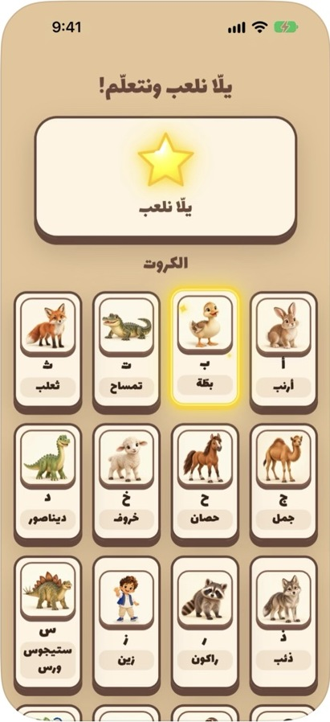

Egyptian Arabic,
made for little ones.


The App
Listen.
Learn. Speak.
Everyday Egyptian Arabic, spoken with warmth. Little ones listen, discover illustrated animals, and build familiarity with words through gentle play.
Authentic Egyptian voicesWorks offlineNo ads or tracking